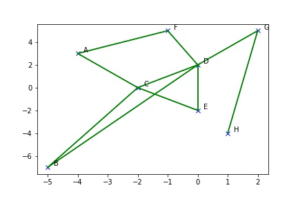
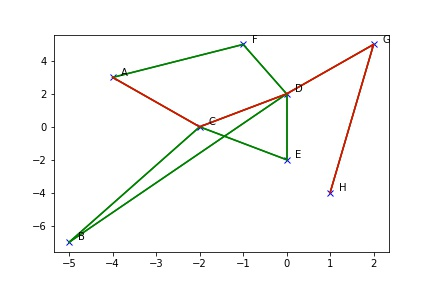

A* search
What's A* Searching
It finds shortest path quickly.
From the following input, searching A to H
You will get these
How?
-
Start from putting all paths from starting node into priority queue
-
get the lowest cost path from queue, explore 1 more step, then put the result in the queue again
-
iterate the step above, until it finds the path or quit without find the path